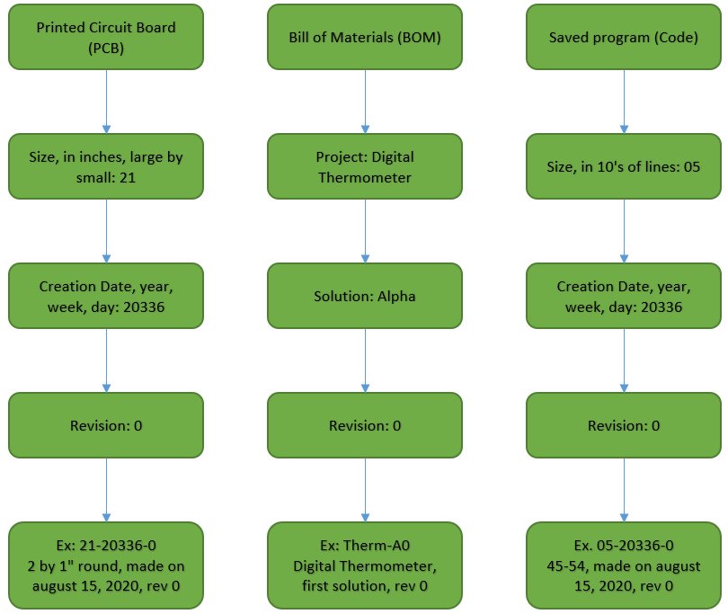

This page provides an overview of the organization and nomenclature I've chosen to use throughout my documentation. I do intend this description of my practices to be comphrensive and useful to those completely unfamiliar with standard engineering industry practices, but if at some point I find I cannot meet both those goals in one location, I will opt to fulfill better the latter.
I consider every document under the 'Engineering' folder on this website to be 'Released', by virtue of its being on this website. For me, a released document is any document that either has been made available to a wider world or could be. A released document is a document which is 'finished', and which I try not to continue to modify (though I occasionally make small edits, likely to address my own clerical errors). A document is considered 'released' when it recieves a part number. As of writing, I have totally seperate part numbers 3 things I create: Products, Boards, and Code.
In much of my personal documentation, I use the term 'Product', but occasionally I use 'Project' when it fits better. Here, 'Project' has a more accurate connoation, so I will use that. Most concretely, a project is a set of problems or goals that I would like solved. Projects are named descriptively to give a good first sense of the set of goals the projects contains. The only restrictions on project names is that they be unique within my set of projects. When deriving a part number from a project name, I will find some way to shorten it if it is long, and remove any spaces. I use care when selecting a stated set of goals for a project, but I will sooner reword or rework goals when they are reiterated in design rationale documents than contort representations of my work in those documents to match goals.
A solution is directly associated with a design rationale document, which describes in an uncontrolled format why all the choices were made in this solution. In layman's terms, a solution is an answer to the set of problems posed by a project.
I use the NATO-phonetic alphabet (with 'alpha' not 'alfa', sorry) to designate different solutions. A solution designator is unique only to the project to which it's associated, such that there is only one 'Alpha' solution for a particular project. This gives each project 26 potential unique solutions, more than I expect to need. Solution names are designated in chronological order of when solutions are released, so that the 'Bravo' solution is never released before the 'Alpha' solution. Within a project, all solutions are only related by the set of problems that they solve (This is the ideal. A solution may occasionally miss some, but never all, defined goals), not by how they solve the problem; think of the number of ways to skin a cat.
Mistakes and errors in released are corrected by revisions. These are simply numbered, with the initial revision being '0'. All revisions of a particular solution are associated with the same design rationale, that is, the design rationale of that solution. However, what is unique to a particular revision is a Bill of Materials (BOM) and an optional errata note.
The BOM, at a minimum, lists all of the parts needed to construct this revision of a solution. Additionally, I typically include quantity, price, and manufacturer, and I give a readily understood description of each part and its part number, if available. This list includes anything I make custom that is needed by a revision. So, if you've wondered why I bother with this whole system of tracking released documents, this is why; part numbers make the BOM a powerful document capable of precisely describing a complex solution to a problem with just a few lines, and usually empower the BOM to imply how that all those parts should be assembled. Errata are occasionally included hehlpful notes that explain what errors were addressed, but if the errors are very minor I allow the existence of a revision to provide the needed errata, namely, that there were errors in a previous revision that aren't in this one.
Note, on this website I sometimes will not make available every revision, but I will always make available the latest revision, which should be the most mistake-free. Additionally, if a solution has only its initial revision (just its vision) then I will list that on the same page as the design rationale
Printed Circuit Board (PCB) design is what I consider my key techincal skill, and is the one which I am most keen to develop. While a board is typically assiociated with just one revision, I've kept the part numbering scheme completely seperate so that they require proper reference in the BOM. Additionally, since part numbers are usually only guranteed to be unique to a particular manufacturer, I use a pseudonym to refer to the Joseph that makes boards. Tyipcally this is "Joe's Boards" or "jdBoard".
The part number for boards I design carries 3 pieces of information numerically seperated by hyphens. First, I use 2 digits to refer to the size in inches of the board, rounded to the nearest integer, with the one digit being the length and the other being the width. The first digit is always the larger of the two, if they are not equal.
The second piece of information is the date of creation, which uses 5 digits. It is specified in order of year (2 digits), week of the year (2 digits), and day of the week (1 digit, with Monday being the first day of the week). The final piece of information is the revision number, which serves just the same purpose as the revision number for products. This could be any number of digits, but is usually just one.
I code because I have to, not because I like to. The pseudonym I give to the fictional manufacturer of my code is typically "Joe's Code" or "jdCode". Similar to boards, the part number contains 3 pieces of numerical information, seperated by hyphens. The first is the size of the code in 10's of lines, rounded to the nearest 10. Two digits are alloted for this, allowing me to make code up to 994 lines long. While it is concievable that I may one day write code with more lines, I sure hope that day doesn't come. The next two piece of information are exactly identical to the date and revision portions of the part numbering scheme for boards, respectively.